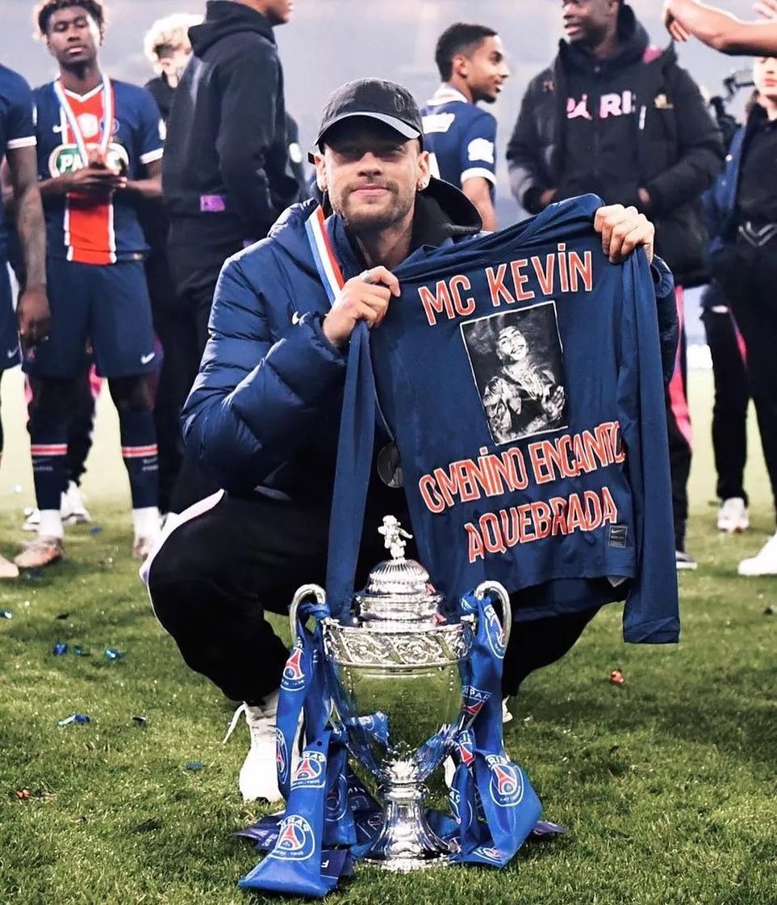

Origem do futebol Não se sabe com precisão a data em que o futebol surgiu. Historiadores contam que os ingleses adquiriram o hábito de chutar uma bola de couro, símbolo da cabeça de um membro do exército da Dinamarca, como forma de comemorar a expulsão dos dinamarqueses de seu país ainda no século X.
Quais são as regras e fundamentos do futebol? As principais regras do esporte são: Os jogos são disputados por duas equipes e cada um conta com 11 jogadores; As partidas duram 90 minutos, divididos em dois tempos de 45 minutos; É proibido o uso das mãos.
Principais fundamentos do futebol 1 - Condução da bola. Conduzir a bola significa saber se movimentar pelo campo tendo consigo a posse de bola. ... 2 - Passe (toque de bola) ... 3 - Chute. ... 4 - Drible. ... 5 - Recepção ou domínio de bola. ... 6 - Cabeçada.
Corinthians, Flamengo, São Paulo, Palmeiras e Internacional. Por conquistas, estruturas… tudo. São os cinco maiores do Brasil. Um do Rio, que é o Flamengo, e o Internacional. São os cinco -, afirmou durante o quadro 'Pergunte ao Vampeta', da Jovem Pan.
O futebol foi introduzido no Brasil no final do século XIX, por Charles Miller. Esse estudante paulista retornou da Inglaterra em 1894 e trouxe na bagagem diversos artigos, como bolas, uniformes e um livro com as regras estabelecidas. Por conta disso, Charles Miller é atualmente considerado o pai do esporte no Brasil.
Contar a história do futebol feminino brasileiro é mais do que lembrar gols, vitórias, derrotas, lances marcantes e seus personagens. É falar sobre resistência, descaso e barreiras quebradas. É lembrar períodos de proibição, preconceito e amadorismo. É impossível contar essa história sem falar da maior de todos os tempos, da única jogadora eleita seis vezes a melhor do mundo: a Rainha Marta. Conheça a trajetória da modalidade que em um século passou de atração de circo a celeiro de talentos.
Até a década de 40, o futebol entre mulheres era longe de clubes ou grandes ligas. O que se sabia era de prática em periferias. Não há registros de uma seleção. Apesar de ainda não ser proibida, a modalidade era considerada violenta e ideal apenas para homens.
A história do clube é bastante cômica, já que por ser o primeiro clube, precisou se adaptar para jogar alguns jogos. Inicialmente o Sheffielf FC era composto pelos sócios que pagavam mansalidades para jogar críquete. Um entusiasta do clube Dylan Ralph contou como eram os jogos.
“A pergunta que nós mais recebemos é: se fomos os primeiros, contra quem nós jogávamos. Nós separávamos as equipes em três sistemas de divisões diferentes: por alfabeto, com times sendo divididos entre A até M contra N até Z; os melhores contra os piores; e os casados contra os solteiros”, disse.
